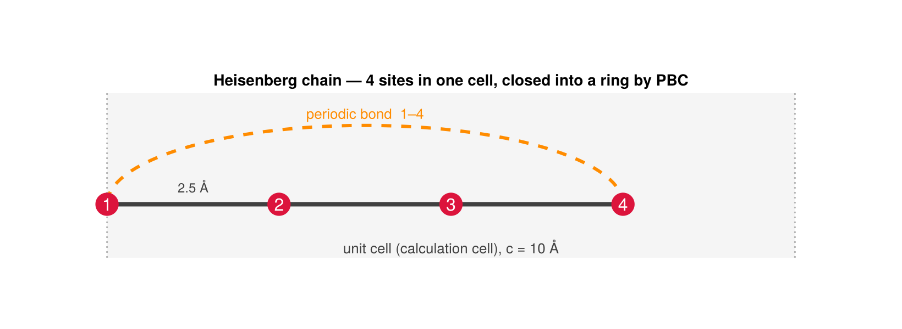

Heisenberg chain
This tutorial walks the whole pipeline on the simplest non-trivial system: a chain of identical spins with a nearest-neighbor Heisenberg coupling. We build the basis, generate synthetic DFT-like data from a known coupling, fit it, and recover the coupling — then repeat with an energy + torque co-fit.
Setup
using SLCE
import Spglib # activate the SpglibBackend extension
using LinearAlgebra, Random
rng = MersenneTwister(2026)
randspin() = (v = randn(rng, 3); v / norm(v))
randcfg(nat) = mapreduce(_ -> randspin(), hcat, 1:nat)The crystal and the basis
A 4-atom chain along $z$ (spaced so neighbors differ), with a nearest-neighbor, 2-body, isotropic interaction — the Heisenberg channel only.
lat = Lattice([8.0 0 0; 0 8.0 0; 0 0 10.0])
frac = [0 0 0 0; 0 0 0 0; 0.0 0.25 0.5 0.75]
chain = Crystal(lat, frac, [1, 1, 1, 1], ["Fe"])
interaction = BasisSpec(; nbody = 2, cutoff = 2.6, lmax = [1], soc = false)
basis = SLCEBasis(chain, interaction; backend = SpglibBackend())
(space_group = basis.spacegroup.symbol, n_salc = n_salcs(basis))(space_group = "P4/mmm", n_salc = 1)The lattice and its unit cell
The figure is drawn straight from the chain crystal and its neighbor list — the same geometry the basis is built on, so it cannot drift from what is computed. Sites are the cartesian_positions; bonds are the build_neighbor_list pairs; the shaded strip is the unit (calculation) cell of length $c$.
using CairoMakie
CairoMakie.activate!(type = "png")
cart = cartesian_positions(chain) # 3 × 4, sites along z
nl = SLCE.build_neighbor_list(chain, SLCE._superset_cutoff(interaction), MinimumImage())
z = cart[3, :]
cell = chain.lattice.vectors[3, 3] # c = 10 Å, the calculation cell
fig = Figure(size = (820, 300))
ax = Axis(fig[1, 1]; aspect = DataAspect(),
title = "Heisenberg chain — 4 sites in one cell, closed into a ring by PBC")
hidedecorations!(ax); hidespines!(ax)
vspan!(ax, 0, cell; color = (:gray, 0.08)) # the unit (calculation) cell
vlines!(ax, [0, cell]; color = (:gray, 0.55), linestyle = :dot)
text!(ax, cell / 2, -0.52; text = "unit cell (calculation cell), c = $(round(Int, cell)) Å",
align = (:center, :top), color = :gray25, fontsize = 13)
intra = unique([minmax(p.i, p.j) for p in nl.pairs if p.shift[3] == 0])
wrap = unique([minmax(p.i, p.j) for p in nl.pairs if p.shift[3] != 0])
for (i, j) in intra # nearest-neighbor bonds in-cell
lines!(ax, [z[i], z[j]], [0.0, 0.0]; color = :gray25, linewidth = 4)
end
for (i, j) in wrap # bond that closes across the boundary
cx, rx, ry = (z[i] + z[j]) / 2, abs(z[j] - z[i]) / 2, 1.15
ts = range(0, π; length = 80)
lines!(ax, cx .+ rx .* cos.(ts), ry .* sin.(ts);
color = :darkorange, linewidth = 3, linestyle = :dash)
text!(ax, cx, ry + 0.05; text = "periodic bond $(i)–$(j)",
align = (:center, :bottom), color = :darkorange, fontsize = 13)
end
scatter!(ax, z, zeros(4); markersize = 30, color = :crimson)
for s in 1:4
text!(ax, z[s], 0.0; text = string(s), align = (:center, :center),
color = :white, fontsize = 16)
end
text!(ax, (z[1] + z[2]) / 2, 0.13; text = "2.5 Å", align = (:center, :bottom),
color = :gray25, fontsize = 12)
xlims!(ax, -1.3, cell + 1.3); ylims!(ax, -0.78, 1.62)
fig
The four sites live in one calculation cell of length $c = 10$ Å. Solid bonds are the in-cell nearest-neighbor pairs $1\text{–}2\text{–}3\text{–}4$; the dashed arc is the bond that closes the chain across the periodic boundary, so site 1 and site 4 are nearest neighbors too and every site has exactly two. All four bonds are equivalent under the chain's space group, so they collapse to one invariant.
There is a single SALC: the nearest-neighbor Heisenberg invariant $\sum_{\langle ij\rangle}\hat{\boldsymbol e}_i\cdot\hat{\boldsymbol e}_j$.
Synthetic data and the fit
We generate energies from a known coupling $J_\text{true}$ over random spin configurations, then fit with ordinary least squares.
heis = SLCE.salcs(basis)[1] # the Heisenberg SALC (public-unexported: qualify)
J_true = 0.0137
configs = [randcfg(4) for _ = 1:40]
E = [J_true * sum(dot(c[:, m.atoms[1]], c[:, m.atoms[2]]) for m in heis.members)
for c in configs] # canonical members list each bond once: Σ over members = Σ_{⟨ij⟩}
f = fit(SLCEFit, SLCEDataset(basis, configs, E), OLS())
J_recovered = 2 * sqrt(3) * coef(f)[1]
(r2 = round(r2_energy(f); digits = 12), J_true, J_recovered)(r2 = 1.0, J_true = 0.0137, J_recovered = 0.013700000000000007)The fit is exact and recovers the coupling. The factor $2\sqrt 3$ is the fixed normalization between the physical coupling and the fitted SALC coefficient — a useful sanity check: a Heisenberg model must satisfy $J = 2\sqrt 3\,j_\varphi$.
Adding the torque
The same coupling fixes the per-atom torque $\boldsymbol\tau_a = -\hat{\boldsymbol e}_a \times \partial E/\partial\hat{\boldsymbol e}_a$ (the physical / Landau–Lifshitz torque). For the Heisenberg energy, $\partial E/\partial\hat{\boldsymbol e}_a$ is a sum of neighbor spins.
function heis_torque(c, J)
nat = size(c, 2); G = zeros(3, nat)
for m in heis.members
i, j = m.atoms[1], m.atoms[2]
G[:, i] .+= J .* c[:, j]
G[:, j] .+= J .* c[:, i]
end
reduce(hcat, cross(G[:, a], c[:, a]) for a = 1:nat) # τ = ∇E × e = −e × ∇E
end
torques = [heis_torque(c, J_true) for c in configs]
fc = fit(SLCEFit, SLCEDataset(basis, configs, E, torques), OLS(); torque_weight = 0.5)
(r2_energy = round(r2_energy(fc); digits = 12), r2_torque = round(r2_torque(fc); digits = 12))(r2_energy = 1.0, r2_torque = 1.0)Both observables are reproduced. Because predict_torque is the analytic derivative of the surface predict_energy evaluates, the recovered model predicts the torque on a fresh configuration too:
isapprox(predict_torque(fc, configs[1]), torques[1]; atol = 1e-8)trueWhere this generalizes
- Drop
soc = falseto keep the anisotropic (Lf > 0) channels — the Dzyaloshinskii– Moriya and symmetric-Γ bilinears. - Raise
lmaxto[2]for biquadratic / single-ion channels. - Raise
nbodyto3for the kagome three-body tutorial. - Swap
OLS()forRidge,Lasso, orElasticNet(see Data and fitting).